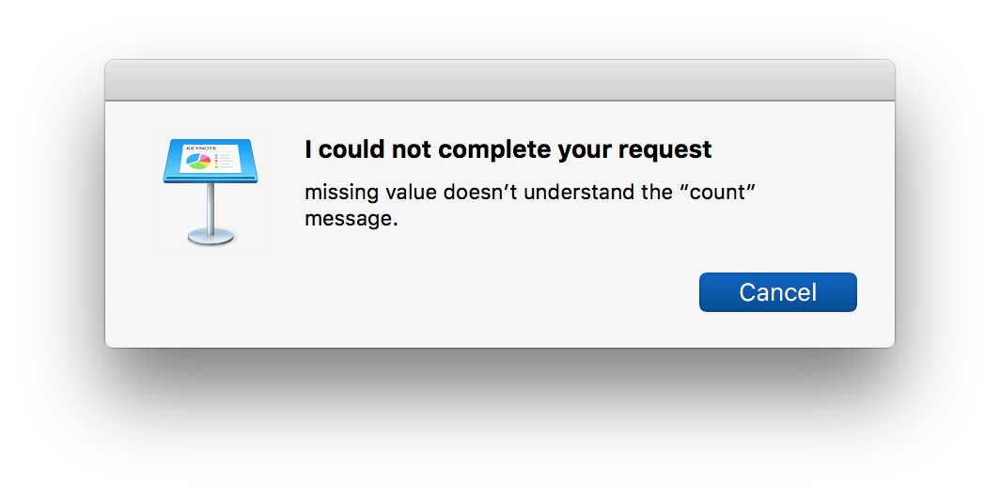
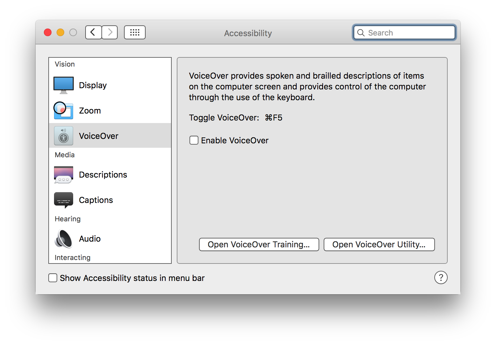
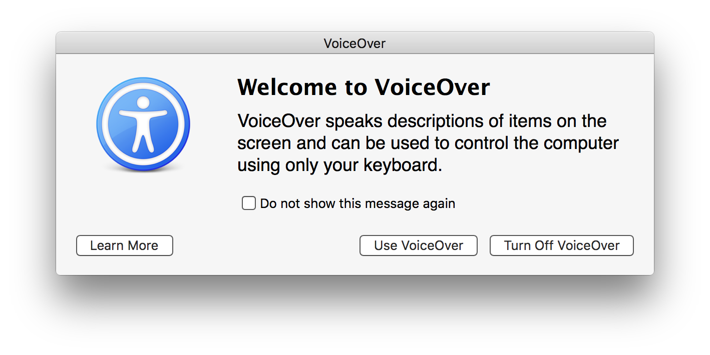
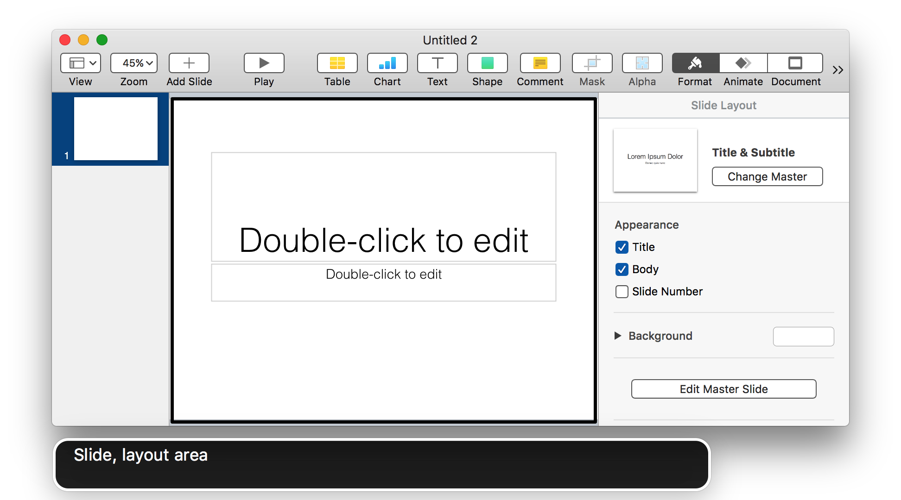

Troubleshooting
The current version of Keynote does not offer the ability to get or set the selection of objects via scripting, and so Dictation Commands rely on accessibility support built into Keynote. On occasion, Keynote may become “confused” and not respond correctly to requests to get the items selected on the current slide. In such a situation, you will see a dialog similar to this one:

This problem can be easily resolved by you. Follow these steps:
DO THIS ►Open the Accessibility system preference pane in the System Preferences application, and select VoiceOver from the list on the left of the window (⬇ see below )

DO THIS ►Select the “Enable VoiceOver” checkbox in the pane (⬆ see above ) and then click the “Use VoiceOver” button in the forthcoming dialog (⬇ see below )

Switch to Keynote, and select the slide layout area of a slide in a presentation. The VoiceOver feedback window will confirm that you have correctly selected it (⬇ see below )

DO THIS ►Turn off VoiceOver by typing Command-F5 (⌘-F5)
Keynote should now respond to Dictation Commands that work with selected slide items, and you probably won’t need to “refresh” Keynote again.